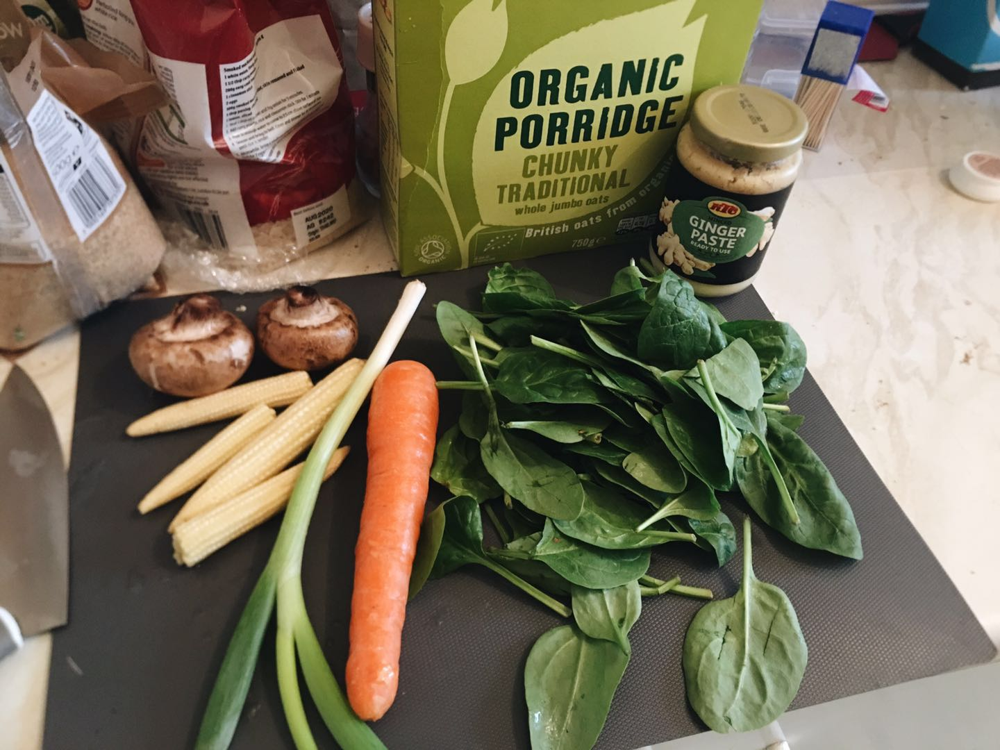
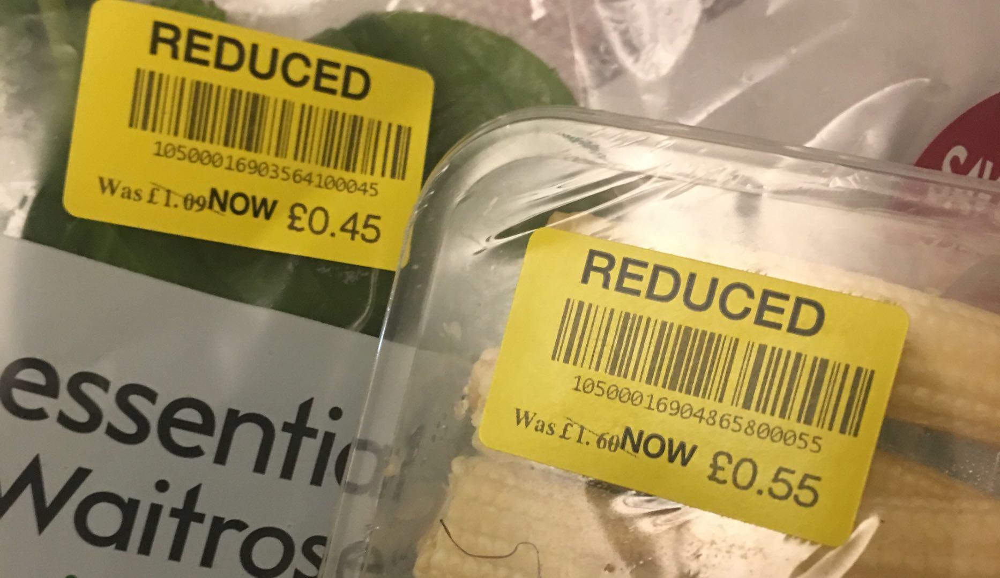
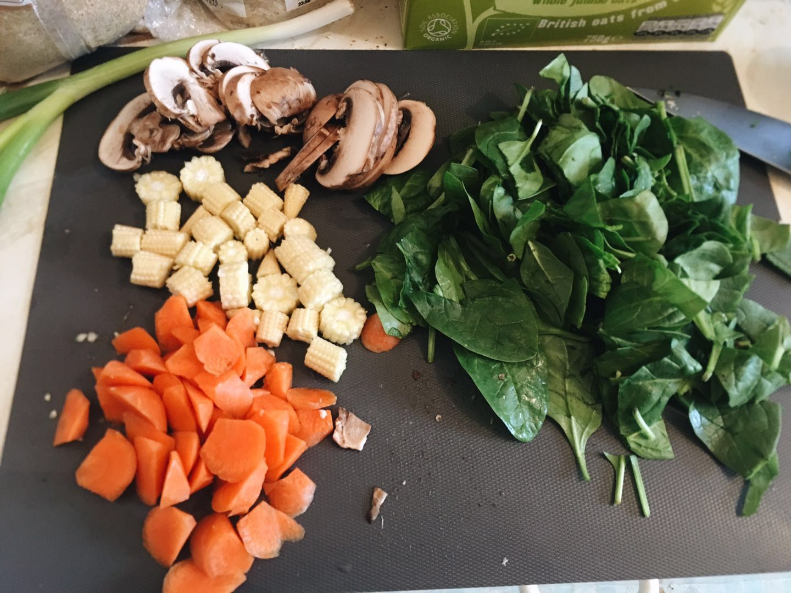
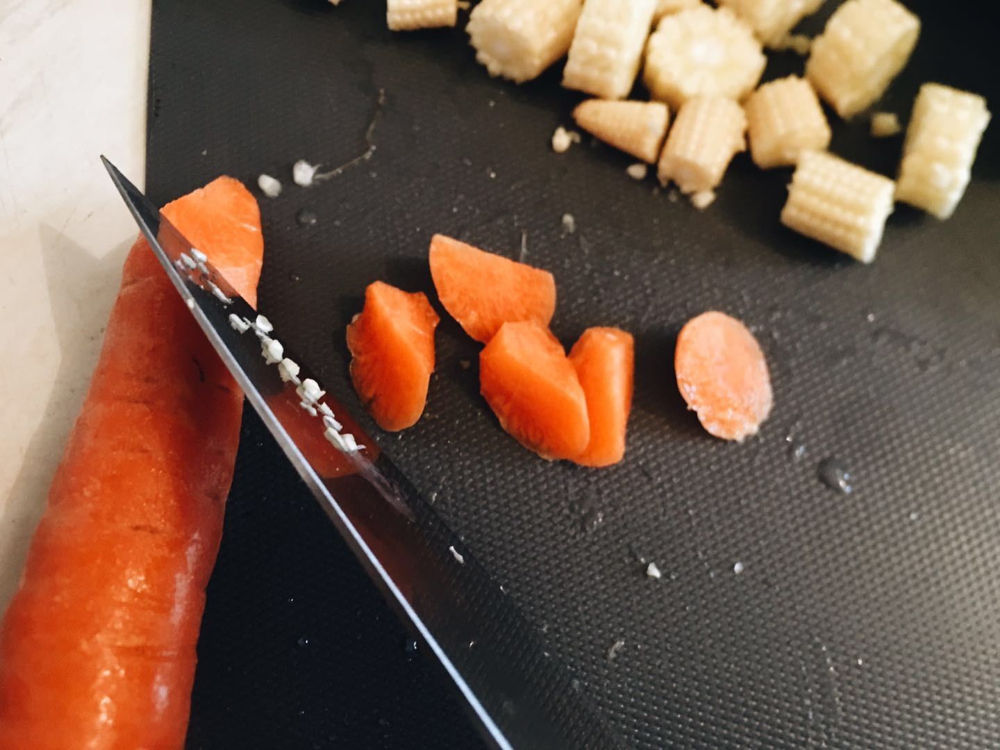
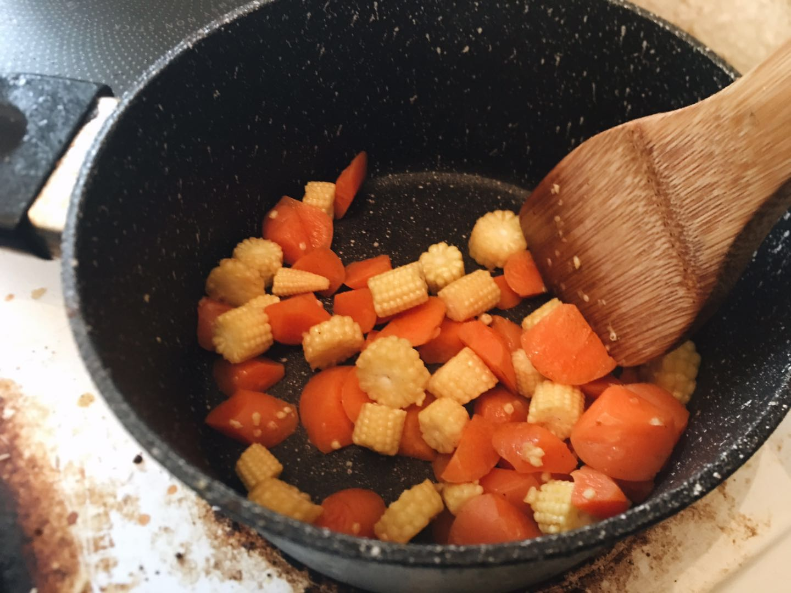
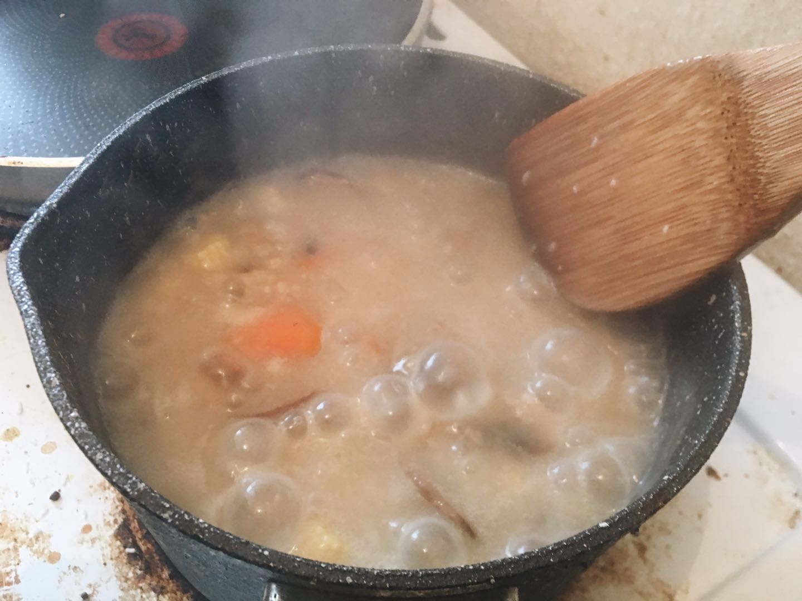

阿金在英国的日常早餐基本就是这个～简单营养快手最重要还便宜！而且原材料基本上随便找个超市都能买齐，也不需要特地往中超跑。困倦寒冷的早晨来一碗色彩鲜艳还温暖的粥最舒服了！

以下 1 人份料理，熟练了差不多从备料到吃完洗好碗 30 分钟左右
准备材料
首先准备好原材料，顺便算一下价钱～
- 有机燕麦粥 50g - 0.15£
- 栗子菇 2朵 - 0.2£
- 玉米笋 4根左右 - 0.4£
- 胡萝卜 1根 - 0.04£
- 菠菜 40g - 0.2£
- 葱 1根 - 0.05£
然后调料用了
- 植物油 半汤匙
- 盐 半茶匙
- 酱油 半汤匙
- 姜泥 半茶匙（我真的很爱姜所以加了一茶匙，普通选手半茶匙应该够了）
- 烤芝麻 随缘撒一撒

价格都是根据用量和超市货架上的单位价格精确计算出来的，不会差太多。燕麦一定要买图里面这种原粒燕麦片，就是可以看出来是燕麦切片，不要买粉末状的没有口感。菇的话，随便什么菇都可以，英国超市最好买的就是这种 chestnut mushroom了，1£ 一盒子大概 10 朵
以上一人份总共 1.04£，但是如果是像阿金一样蹲点去超市采购打折食品的大妈型选手，就能把成本控制到 0.7£ 以下了

原材料方面，胡萝卜和玉米笋不建议省略，最后煮出来的粥会很香的，其他可以随缘加，别的喜欢的蔬菜也可以。
前期处理
烧开水，然后在碗里称出 50g 燕麦，这个分量适合胃口较小的人，可以酌情增加。
然后在碗里加入浸没燕麦的开水泡燕麦
玉米笋胡萝卜切粒，菇根切掉后切片，菠菜随缘切一切，主要防止太长吃的时候缠在勺子上特别狼狈 0w0

胡萝卜我是用滚刀的方式像削铅笔一样切小粒，我觉得这样比切片后切粒方便

开煮
然后锅里放油，灶台开最大档，油热了把胡萝卜和玉米笋放进去炒（如果不追求纯素，也可以加一些培根碎，一人份用两片薄的培根条就可以了，切碎了放到锅里炒出油再放蔬菜，味道更好，但是盐要少放），胡萝卜素是脂溶性选手，油炒才有营养。炒 2 分钟左右，胡萝卜表面湿湿的、玉米笋稍微有点深色即可

然后把菌菇倒入，炒 1 分钟左右到变软。把燕麦连同浸泡的水一起倒进锅里，补水到刚好浸没所有食材，搅拌均匀后，灶开中间档煮 10 分钟左右，记得隔几分钟拌一拌防止粘底
煮到这样粘稠冒大泡泡的时候，就可以关火了。把菠菜放入锅中，搅拌均匀，用余热把菠菜烫熟。然后加入盐、酱油、姜泥调味。

准备吃
倒入碗中，葱切成葱花撒上去，烤芝麻撒上去，喜欢的话也可以撒点黑胡椒和芝麻油，也很好吃
拌拌匀，开吃啦～～
吃完只需要洗一锅一碗一铲一勺一刀一砧板，而且全都是水里冲一下擦一擦就好了都没有油的～